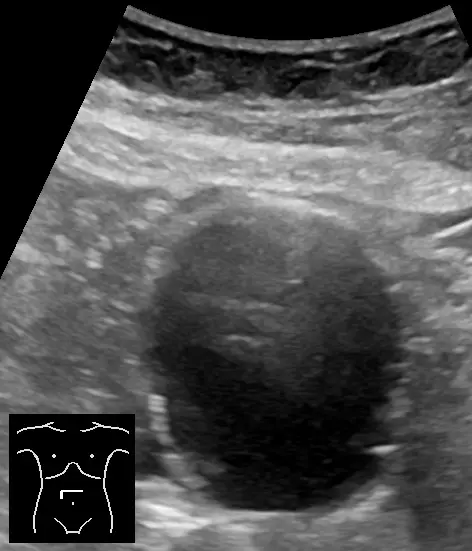
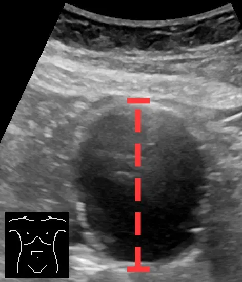
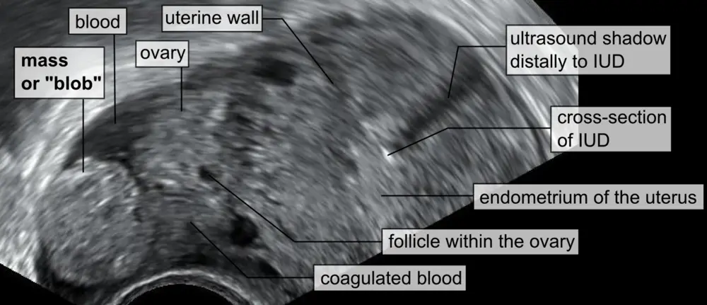
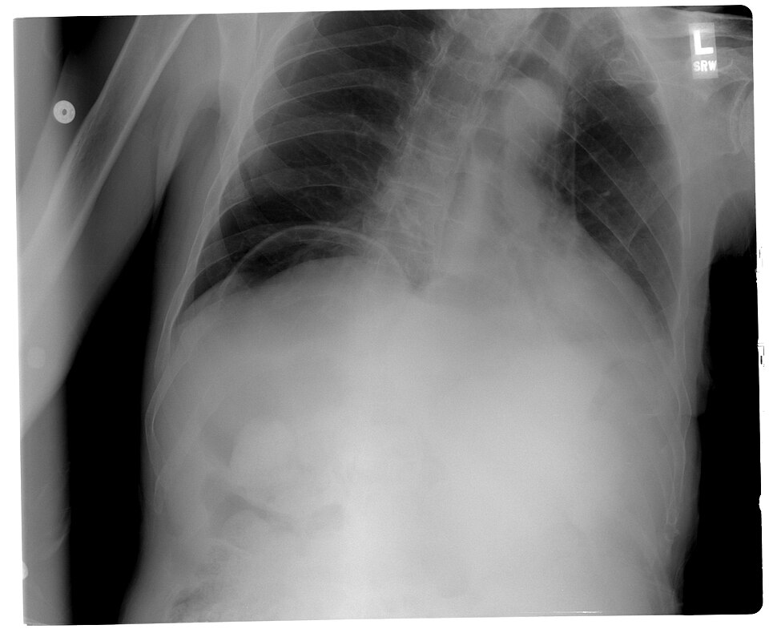

Douleur abdominale
Protocole du cabinet de médecine de famille, en Suisse
Les dix diagnostics du LOT, du plus fréquent au plus rare
Au cabinet, le ventre se trie dans un ordre fixe, si bien qu’on exclut la mort qui vient vite, ensuite le sepsis, enfin l’affection qui exige l’hôpital, avant de raisonner par fréquence. Les objectifs suisses de la prise en charge suivent d’ailleurs exactement cette hiérarchie, car ils placent l’urgence vitale en tête[1].
🚩 E1 La porte vitale réunit le choc hémorragique d’un anévrisme ou d’une grossesse extra-utérine rompus, l’infarctus mésentérique, la hernie étranglée, l’occlusion ischémique et l’infarctus inférieur. Dès qu’ils sont reconnus, ces tableaux imposent donc tous la même conduite : transfert immédiat en ambulance médicalisée, patient à jeun[1].
🚩 E2 La porte septique tient en deux tableaux, la perforation d’un ulcère et l’angiocholite reconnue à la triade de Charcot, qui basculent toutes deux rapidement vers le choc[1].
Hors de ces deux portes, certaines affections ne menacent pas d’emblée la vie et demandent pourtant une hospitalisation, même si le patient marche encore ; elles ne portent aucun rang E[1].
Les séries hospitalières citées par les HUG fournissent l’ordre des fréquences[2]. Toutefois, en médecine générale, un tiers des douleurs abdominales aiguës restent non spécifiques et environ 10 % relèvent d’un traitement hospitalier[3].
- DX.1 — Douleur abdominale non spécifiqueElle ouvre chaque série, de 34,8 % dans la plus récente à 53,3 % dans la plus ancienne[2].rang E : aucun
- DX.2 — Gastroentérite aiguëElle se range parmi les 80 % de causes médicales, sans part isolée dans les séries citées[2].rang E : aucun
- DX.3 — Colique néphrétiqueElle atteint 11 % des cas dans la série la plus récente[2].rang E : aucun
- DX.4 — Appendicite aiguëElle tombe à 7,5 % dans la série la plus récente, alors que les anciennes séries montaient à 26,0 %[2].rang E : aucun
- DX.5 — Cholécystite ou angiocholiteLa cholécystite atteint 6,1 % dans la série la plus récente, plus 1,5 % de colique hépatique[2].🚩 E2 si triade ou choc
- DX.6 — Pancréatite aiguëElle représente 4,3 % des cas dans la série la plus récente[2].rang E : aucun
- DX.7 — Diverticulite aiguëElle compte pour 3,8 % des cas dans la même série[2].rang E : aucun
- DX.8 — Ulcère ou perforationL’ulcère perforé atteint 2,8 % dans les deux séries les plus anciennes et 4,0 % dans la suivante[2].🚩 E2 si perforation
- DX.9 — Grossesse extra-utérineLa ligne gynécologique atteint 6,1 % dans la série la plus récente, et la rupture tubaire en constitue la fraction vitale[2].🚩 E1 si rupture ou choc
- DX.10 — Anévrisme de l’aorte abdominaleRare sur l’ensemble des douleurs, l’anévrisme rompu est pourtant l’une des causes les plus fréquentes après 70 ans[2].🚩 E1
Trois urgences n’appartiennent pas aux dix diagnostics et gardent pourtant leur place dans la porte E1 : la hernie étranglée ou l’occlusion avec signes d’ischémie, l’infarctus mésentérique et l’infarctus inférieur. Le colloque genevois exige en outre une imagerie immédiate pour l’ischémie mésentérique comme pour l’anévrisme[2].
L’occlusion simple, sans signe d’ischémie, reste une urgence chirurgicale sans rang E : elle impose l’hospitalisation sans délai, aux urgences, que le traitement soit conservateur ou chirurgical[1].
Ce cours, lu seul avec ses fenêtres, suffit-il pour gagner 90 à 100 % des points sur ce sujet et pour traiter ce patient en sécurité ?
Oui, parce qu’il donne l’ordre de tri suisse, de la porte vitale à l’observation, et qu’il rattache chaque chiffre et chaque dose à un extrait cité, le plus souvent suisse et daté.
Il fixe aussi les doses et les contre-indications des antalgiques selon l’information professionnelle, ainsi que les situations qui imposent l’ambulance médicalisée sans examen supplémentaire.
1. Définition et sémantique
Au colloque de médecine de premier recours des HUG du 11 octobre 2017, la douleur abdominale aiguë se définit comme une douleur spontanée de l’abdomen, présente depuis moins de 7 jours[2]. Cette borne sépare ainsi le motif aigu de la douleur chronique, que la stratégie genevoise de 2023 fixe à au moins 3 mois[4].
Pour l’Association internationale pour l’étude de la douleur, l’IASP, la douleur est une expérience désagréable, sensorielle et émotionnelle, liée à une lésion tissulaire réelle ou potentielle, ou qui lui ressemble[5]. La formule de 1979 exigeait en revanche une plainte décrite en termes de lésion, critère que la révision a retiré parce qu’il dépendait de la capacité à décrire[5].
Le terme désigne pourtant une autre réalité, puisqu’il nomme un état provisoire qui exige une évaluation et un traitement urgents, et non un diagnostic[6].
Abdomen aigu, définition chirurgicale
Trois symptômes le caractérisent : une douleur soudaine, forte et persistante, une défense avec rigidité de la paroi, et un trouble du péristaltisme[6].
La littérature allemande emploie d’ailleurs la même notion de syndrome clinique, qui va du tableau subaigu à la forme fulminante avec choc[7].
La distinction garde une portée pratique : un ventre douloureux sans défense ni trouble du transit n’est pas un abdomen aigu, et pourtant il peut cacher une urgence vasculaire[1].
Trois mécanismes de douleur structurent l’interrogatoire : la , la et la , et chacun oriente vers un étage et un organe différent[6].
Douleur viscérale
Elle naît lorsqu’un organe creux subit une distension, une tension, une torsion ou une contraction, et le patient la situe mal[6].
Son siège suit l’origine embryologique de l’organe, si bien qu’elle se projette dans l’épigastre, autour de l’ombilic ou dans l’hypogastre, selon la carte embryologique de l’abdomen[6].
Douleur somatique
Elle provient du péritoine pariétal, se décrit comme aiguë ou lancinante, et le malade la localise avec précision[6].
Lorsqu’une douleur viscérale devient somatique, la maladie a gagné le péritoine, ce qui explique la migration classique de l’appendicite[1].
Douleur projetée
Elle résulte de la convergence d’afférences somatiques et viscérales ; la douleur se projette alors dans les zones de Head, loin de l’organe malade[6].
La scapulalgie biliaire en est donc l’exemple de cabinet, avec un rapport VPP/P de 3,6 en faveur d’une affection biliaire[2].
| Terme | Ce qu’il désigne | Ce qu’il n’autorise pas |
|---|---|---|
| Douleur abdominale aiguë | Motif de consultation de moins de 7 jours[2] | Conclure à une maladie bénigne sur la seule durée |
| Abdomen aigu | État transitoire à trois symptômes, qui exige une évaluation urgente[6] | Remplacer le diagnostic d’organe |
| Douleur abdominale chronique | Plainte persistante ou récidivante, présente depuis 3 mois au moins[4] | Ignorer un drapeau rouge parce que la plainte est ancienne |
| Douleur non spécifique | Diagnostic de sortie quand aucune cause n’est trouvée[6] | Servir de diagnostic d’entrée au cabinet |
Le diagnostic de douleur non spécifique se pose à la sortie, jamais à l’entrée : il couvre jusqu’à 44,3 % des abdomens aigus, une fois les causes graves écartées[6].
2. Épidémiologie
En médecine générale, la douleur abdominale aiguë se place au 9e rang des motifs de consultation[3]. Par ailleurs, aux urgences, elle représente 10 % des consultations selon le colloque genevois[2]. Les séries allemandes récentes donnent de leur côté une part de 5 à 12 %[7].
L’incidence de l’abdomen aigu atteint 5 à 7 cas pour 1000 habitants par an[7]. Ce chiffre concerne l’abdomen aigu, et non toute douleur du ventre ; il sous-estime donc la charge réelle du cabinet[7].
Quatre cinquièmes des douleurs abdominales aiguës ont une cause médicale et un cinquième une cause chirurgicale ; 35 % repartent sans diagnostic[2]. La proportion se lit donc d’une autre façon au cabinet : 80 % des ventres douloureux relèvent d’une cause non chirurgicale, mais le cinquième restant décide du pronostic[2].
| Diagnostic | Série de 2004, 953 cas | Série de 1981, 3772 cas | Série de 1979, 6097 cas | Série de 1977, 991 cas |
|---|---|---|---|---|
| Douleur non spécifique | 34,8[2] | 22,0 | 43,0 | 53,3 |
| Appendicite | 7,5[2] | 26,0 | 24,1 | 18,8 |
| Cholécystite | 6,1, plus 1,5 de colique hépatique[2] | 10,0 | 8,9 | 7,0 |
| Occlusion intestinale | 6,7, plus 3,4 de hernie aiguë[2] | 9,0, plus 3,0 de hernie | 4,0 | 3,2 |
| Colique néphrétique | 11[2] | 4,0 | 2,8 | 5,8 |
| Ulcère perforé | non compté[2] | 4,0 | 2,8 | 2,8 |
| Pancréatite aiguë | 4,3[2] | 4,0 | 2,1 | 1,7 |
| Diverticulite | 3,8[2] | 2,0 | 2,1 | 1,4 |
| Causes gynécologiques | 6,1[2] | 7,0 | non comptées | 3,2 |
Le tableau ne se moyenne pas, car les séries diffèrent par l’époque, le recrutement et l’accès à l’imagerie. Ce décalage explique d’ailleurs la baisse de la douleur non spécifique entre la plus ancienne et la plus récente[2]. La chute de l’appendicite à 7,5 % dans la série la plus récente impose donc la même prudence[2].
Les causes changent avec l’âge : avant 30 ans dominent l’appendicite, les affections gynécologiques et la douleur non spécifique[2]. Après 70 ans viennent en revanche les hernies étranglées, les péritonites, les anévrismes rompus, les cholécystites, les sigmoïdites et les cancers[2].
Plus le patient est âgé, plus la cause est organique et souvent chirurgicale[2]. Ainsi, chez 380 malades de plus de 65 ans atteints d’un abdomen aigu, 5 % sont morts de la cause et 22 % ont été opérés[6].
Le danger le plus discret touche le grand âge : sur 2121 autopsies, un abdomen aigu méconnu expliquait le décès dans 5 % des cas après 70 ans[6]. Par ailleurs, la mortalité globale de l’abdomen aigu varie de 2 à 12 %[7].
Le tri préhospitalier ne peut dès lors guère différer ces malades, puisque seuls 5 % des syndromes douloureux abdominaux aigus pouvaient recevoir un traitement différé[8]. Les 95 % restants étaient admis aux urgences, et 22 % d’entre eux seulement finissaient hospitalisés au terme de l’évaluation[8].
L’ischémie mésentérique aiguë illustre l’écart entre rareté et gravité : 6,2 à 8,7 cas pour 100 000 personnes par an, mais une mortalité qui reste élevée lorsque le diagnostic tarde[7].
3. Physiopathologie
Tout ventre douloureux obéit à l’un de cinq mécanismes : distension d’un organe creux, inflammation, perforation, ischémie ou hémorragie. Chaque mécanisme laisse une empreinte clinique propre, si bien que le cabinet doit la lire avant tout examen[8].
La carte embryologique de la douleur viscérale
La douleur viscérale reste mal localisée, et son étage dépend de l’intestin embryonnaire d’origine, ce qui fournit au clinicien une première carte[6].
- L’intestin antérieur reste en amont de la grande papille du deuxième duodénum, où s’ouvre l’ampoule de Vater[9].
- L’intestin moyen, irrigué par l’artère mésentérique supérieure, commence à cette papille et va jusqu’aux deux tiers proximaux du côlon transverse[9].
- L’intestin postérieur, irrigué par l’artère mésentérique inférieure, commence au dernier tiers du transverse et comprend le côlon descendant, le sigmoïde et le rectum[10].
- Il se termine dans la partie haute du canal anal, au-dessus de la ligne pectinée[11].
La règle clinique en découle : l’intestin antérieur, avec le système hépatobiliaire, se plaint dans l’épigastre, l’intestin moyen autour de l’ombilic, et l’intestin postérieur dans l’hypogastre[6].
Quand l’inflammation atteint le péritoine pariétal, la douleur change de nature : elle devient somatique, précise et aggravée par le mouvement. L’appendicite en donne le modèle, avec une douleur péri-ombilicale qui migre ensuite en fosse iliaque droite[1].
De l’inflammation au troisième secteur
Dans l’inflammation ou le sepsis abdominal, les leucocytes libèrent des médiateurs qui provoquent la fièvre et augmentent la perméabilité capillaire[8]. Le liquide quitte alors les vaisseaux, ce qui constitue un troisième secteur ; sans réanimation liquidienne, l’hypovolémie s’installe[8].
La chaîne se lit au lit du malade : soif, déshydratation, puis anxiété et tachypnée annoncent le choc. Dès qu’elles apparaissent, ces manifestations imposent la prise en charge hospitalière urgente[8].
La fréquence cardiaque, la fréquence respiratoire et la température traduisent tôt la répercussion générale d’une maladie abdominale, alors que la pression artérielle et la diurèse ne chutent qu’à la fin[8].
Perforation et péritonite
Quand un organe creux se perfore, son contenu se répand dans le péritoine ; le tableau débute brutalement, souvent bien localisé, puis évolue vite vers une péritonite localisée, puis généralisée[1].
La paroi se contracte alors en , jusqu’au ventre de bois, tandis que la douleur s’éveille au moindre ébranlement et que les bruits digestifs se taisent[1].
Défense, contracture et péritonisme
La défense est une contraction réflexe et involontaire de la paroi abdominale ; elle traduit une irritation péritonéale[8].
Au début, elle demeure locale, limitée à l’organe en cause ; toute vibration, la marche ou la toux suffit à la déclencher[7].
Chez le sujet âgé dont la musculature abdominale est faible, les signes péritonéaux peuvent manquer, ce qui retarde le diagnostic[6].
Ischémie : la douleur qui précède les signes
L’ inverse la logique habituelle : la douleur est très intense alors que l’abdomen reste initialement souple[1]. Elle résiste aux opiacés chez un patient porteur de facteurs de risque cardiovasculaire, et elle constitue une urgence vitale[2].
Ischémie mésentérique aiguë
Le terrain l’annonce d’abord : trouble du rythme, facteurs de risque cardiovasculaire ou antécédent d’accident ischémique[1].
Son incidence augmente avec l’âge jusqu’à 190 cas pour 100 000 personnes par an après 85 ans[7].
Une douleur sévère avec un examen pauvre doit être tenue pour une ischémie mésentérique jusqu’à preuve du contraire, et l’angio-TDM se fait sans délai[7].
Puis, après un intervalle trompeur sans douleur, la muqueuse s’infarcit au-delà de 6 heures et la paroi se nécrose[7].
L’occlusion suit en revanche une autre chaîne, car le contenu digestif s’accumule en amont de l’obstacle, ce qui donne l’arrêt des gaz et des matières, les vomissements et le ballonnement[1]. Que le traitement soit conservateur ou chirurgical, l’occlusion simple s’hospitalise donc sans délai, aux urgences, sans rang E[1]. Si l’anse s’étrangle, l’ischémie s’ajoute à la distension : défense, lactates et syndrome inflammatoire en signent la gravité[2]. Seule cette occlusion ischémique, comme la hernie étranglée, entre dans la porte vitale[2].
Hémorragie intrapéritonéale
Le choc hémorragique d’origine abdominale a deux causes classiques : l’anévrisme aortique abdominal qui se rompt et la grossesse ectopique rompue[1]. Lorsqu’un malaise orthostatique accompagne des douleurs abdominales, l’alerte doit être immédiate[1].
| Mécanisme | Signe au cabinet | Examen qui confirme | Geste qui corrige |
|---|---|---|---|
| Distension d’un organe creux | Colique mal localisée, agitation[6] | Échographie ou TDM selon l’étage | Lever l’obstacle |
| Inflammation péritonéale | Douleur à la toux, défense[8] | CRP, échographie, TDM | Antibiotique, chirurgie |
| Perforation | Début brutal, ventre de bois[1] | Air libre sur la radiographie ou la TDM | Opération |
| Ischémie mésentérique | Douleur intense, abdomen souple[1] | Angio-TDM, lactates | Revascularisation |
| Hémorragie intrapéritonéale | Malaise orthostatique, choc[1] | Échographie au lit, test de grossesse | Chirurgie ou traitement endovasculaire |
| Troisième secteur | Soif, tachycardie, tachypnée[8] | Paramètres vitaux, lactates | Bolus de volume intraveineux |
4. Démarche diagnostique
Le raisonnement suit donc les rangs E avant la fréquence : le premier objectif reste d’identifier l’urgence vitale qui impose un transfert immédiat, puis le sepsis, avant d’investiguer ou d’observer le reste[1].
La décision d’orientation tolère ainsi l’absence d’un diagnostic précis, pourvu que les critères de gravité soient reconnus[8]. Au cabinet, on identifie donc d’abord le groupe de maladies et son potentiel évolutif, plutôt qu’un organe isolé[8].
- 🚩 E1 On cherche le choc, la hernie étranglée et l’occlusion ischémique par les constantes, les orifices herniaires et l’ECG. Chacun impose le transfert immédiat en ambulance médicalisée[1].
- 🚩 E1 On dose aussi la β-HCG : un test positif, sans grossesse jamais visualisée, avec ou sans douleur ni saignement, adresse la patiente aux urgences de gynécologie[12]. Si elle est instable, la grossesse extra-utérine rompue devient un choc hémorragique, donc une urgence vitale[1].
- 🚩 E2 On cherche ensuite le sepsis abdominal : fièvre, péritonite, triade de Charcot, ventre de bois après un début brutal[1].
- Sans rang E, on reconnaît l’affection qui ira de toute manière à l’hôpital, comme l’appendicite, la cholécystite, la pancréatite ou l’occlusion simple, qui s’hospitalisent sans délai, aux urgences[1].
- Enfin, le reste s’investigue en ambulatoire ou s’observe, à condition de réexaminer le patient sans tarder[1].
L’anamnèse donne le bon diagnostic dans 76 % des cas en médecine générale, et la palpation détecte l’abdomen chirurgical[3]. La clinique seule atteint une sensibilité de 88 % pour une spécificité de 41 %, si bien que tout doute persistant appelle des examens ciblés[6].
| DX | Signe clé | Examen qui tranche | Mécanisme | Conduite immédiate | Rang E |
|---|---|---|---|---|---|
| DX.1 Non spécifique | Examen rassurant, constantes normales | Réexamen à moins de 24 heures[1] | Aucun mécanisme lésionnel trouvé | Antalgie courte, consignes écrites | aucun |
| DX.2 Gastroentérite | Diarrhées présentes[1] | Clinique, évolution | Inflammation muqueuse infectieuse | Réhydratation, réévaluation | aucun |
| DX.3 Colique néphrétique | Irradiation descendante, hématurie[2] | Bandelette, échographie | Distension de la voie excrétrice | Antalgie, puis échographie de la voie urinaire | aucun |
| DX.4 Appendicite | Migration vers la fosse iliaque droite[1] | Échographie, puis TDM si doute | Obstruction et inflammation de l’appendice | Hospitalisation sans délai, aux urgences, avis chirurgical | aucun |
| DX.5 Cholécystite ou angiocholite | Douleur de plus de 6 heures, fièvre, Murphy[13] | Échographie | Obstruction biliaire et infection | Hospitalisation ; triade de Charcot ou choc traités comme un sepsis | 🚩 E2 si triade ou choc |
| DX.6 Pancréatite aiguë | Douleur épigastrique, terrain biliaire ou alcool[1] | Lipase, puis TDM | Autodigestion pancréatique | Hospitalisation en médecine | aucun |
| DX.7 Diverticulite | Douleur de la fosse iliaque gauche, fièvre[2] | TDM | Inflammation d’un diverticule, abcès possible | Ambulatoire si forme simple confirmée, hôpital si compliquée | aucun |
| DX.8 Ulcère ou perforation | Début brutal, ventre de bois, AINS[2] | Air libre en imagerie | Perforation et péritonite | Transfert immédiat, à jeun | 🚩 E2 si perforation |
| DX.9 Grossesse extra-utérine | Test de grossesse positif avec douleur[12] | β-HCG, échographie | Implantation tubaire, rupture et hémorragie | Urgences de gynécologie ; en choc, ambulance médicalisée | 🚩 E1 si rupture ou choc |
| DX.10 Anévrisme aortique | Malaise orthostatique, choc[1] | Échographie au lit, angio-TDM | Rupture de la paroi aortique, hémorragie | Ambulance médicalisée, voie veineuse | 🚩 E1 |
Le tableau ne remplace pas l’examen, puisque la valeur prédictive positive de la clinique dépasse 70 % pour l’appendicite, la colique néphrétique et la pancréatite, et 90 % pour la hernie étranglée[2]. Elle reste cependant médiocre pour la colique hépatique, l’ulcère et l’occlusion[2].
5. Anamnèse ciblée et drapeaux rouges
L’anamnèse reste l’outil principal de l’évaluation, car elle oriente tout le reste[6]. Cinq questions la structurent : quand, comment, depuis combien de temps, pourquoi et où, chacune ouvrant une famille de diagnostics[6].
Un début brutal, parfois d’emblée bien localisé, oriente vers la perforation digestive[1]. Une douleur inhabituellement intense ou prolongée chez un lithiasique connu signale une complication biliaire[1].
L’irradiation trahit l’organe, puisque la scapulalgie oriente vers les voies biliaires, et l’irradiation descendante vers la colique néphrétique, avec des rapports VPP/P de 3,6 et 4,5[2].
Les signes d’accompagnement pèsent souvent plus que la douleur : pour l’occlusion, les vomissements fécaloïdes portent un rapport VPP/P de 5,4, l’arrêt des gaz de 3,5 et les vomissements répétés de 1,9[2].
Quand une hématurie apparaît, elle oriente vers la colique néphrétique, avec un rapport de 13,8[2]. Elle ne l’affirme pas pour autant, puisque l’hématurie accompagne aussi 30 % des ruptures d’anévrisme abdominal[2].
Les antécédents ouvrent ou ferment des portes, si bien qu’on les interroge un à un. Un traitement par AINS oriente vers la perforation ulcéreuse, une laparotomie ancienne vers l’occlusion et l’alcool vers la pancréatite, avec des rapports de 6,4, 2,7 et 4,9[2].
Le contexte peut à lui seul justifier l’hospitalisation, par exemple un anévrisme abdominal connu et non opéré, une anticoagulation ou un traumatisme récent de la base du thorax à gauche[8].
Chez une femme non ménopausée, la douleur pelvienne cache une grossesse dans 13 % des cas ; l’interrogatoire n’étant pas fiable, on dose la β-HCG[2]. Le test se fait donc de principe, sans attendre un retard de règles[1].
Certains terrains et certaines maladies masquent les signes : l’enfant, le sujet âgé, l’immunodéprimé sous corticoïdes et l’ischémie mésentérique[6]. Le diabétique et le patient sous immunosuppresseur exigent un seuil d’alerte élevé[1].
Une étude observationnelle de 1000 patients a ainsi dégagé cinq facteurs prédictifs d’une cause chirurgicale[6]. Ce sont une douleur depuis moins de 48 heures, une douleur suivie de vomissements, une défense avec décompression douloureuse, un âge de 65 ans ou plus et une chirurgie abdominale antérieure[6].
| Drapeau rouge | Ce qu’il signifie | Action immédiate |
|---|---|---|
| Malaise orthostatique avec douleur abdominale[1] | Hémorragie intrapéritonéale, anévrisme rompu ou grossesse extra-utérine rompue | Ambulance médicalisée, voie veineuse, à jeun |
| Douleur intense, abdomen souple, arythmie[1] | Infarctus mésentérique | Transfert immédiat |
| Début brutal, ventre de bois[1] | Perforation, péritonite | Transfert immédiat |
| Fièvre, douleur de l’hypocondre droit, ictère[1] | Angiocholite, choc septique possible | Transfert, hémocultures si possible |
| Arrêt des gaz et des matières, vomissements[1] | Occlusion ; hernie étranglée possible | Palper les orifices herniaires ; occlusion simple : hospitalisation sans délai, aux urgences ; hernie étranglée ou signes d’ischémie : ambulance médicalisée, à jeun |
| Fièvre élevée, irritation péritonéale, CRP très élevée[1] | Gravité clinique ou biologique | Adresser aux urgences sans hésiter |
| Hémorragie digestive[8] | Saignement d’origine non orificielle | Évaluation hospitalière dans tous les cas |
| Signes neurologiques, patient à haut risque[7] | Atteinte systémique | Évaluation urgente |
Le souhait du patient module la décision d’orientation, mais il ne la fonde pas[8]. L’entretien se termine donc par une question simple : qui pourra le ramener si la douleur s’aggrave cette nuit[8] ?
6. Examen physique
L’examen doit commencer par les paramètres vitaux, avant même de toucher le ventre, et mesurer le pouls, la pression artérielle, la fréquence respiratoire, la température et la vigilance[6]. En effet, une fréquence cardiaque au-delà de 95/min, une pression systolique de 90 mm Hg ou moins et une température sous 36,5 °C annoncent une morbidité et une mortalité accrues[6].
Inspection
Quand il souffre d’une péritonite, le patient reste immobile, les jambes repliées en chien de fusil[6]. L’inspection cherche aussi des cicatrices, des hernies, des stomies ou un ictère, qui orientent chacun vers une famille de causes[6].
Auscultation
Sa valeur est discutée, puisque le silence abdominal n’exclut pas une fonction intestinale normale ; elle aide cependant devant un iléus[6]. Des bruits métalliques de lutte constituent en soi un critère de gravité[8].
Palpation et percussion
La palpation reste probablement la partie décisive de l’examen, parce qu’elle juge de l’urgence par la défense, la douleur à la décompression et le péritonisme[6]. Ainsi, faire tousser le patient, lui faire heurter le lit ou percuter doucement la paroi suffit à réveiller une douleur péritonéale[6].
Trois signes simples ne dépendent pas de l’examinateur : la douleur provoquée par l’inspiration, par l’expiration et par la toux. Réunis, ils précèdent une hospitalisation dans 70 % des cas, et on les tient pour des critères d’admission[8].
Les orifices herniaires s’examinent chez tout patient porteur d’un abdomen aigu, car la hernie étranglée n’a rien d’exceptionnel chez le sujet âgé[1]. Devant une occlusion, cette palpation précède toute imagerie[2]. Une hernie tendue et irréductible, ou une défense sur une occlusion, relève alors de la porte vitale, avec transfert immédiat en ambulance médicalisée, à jeun[1]. Sans ces signes, l’occlusion simple s’hospitalise sans délai, aux urgences[1].
Si une masse pulsatile s’accompagne de douleurs abdominales vives chez un fumeur hypertendu de 65 ans, sans péritonisme, elle signe l’urgence vitale de l’anévrisme[2]. Ce tableau associe toutefois la masse aux douleurs vives : un anévrisme indolore ne relève donc pas de cette porte[2].
Deux signes éponymes gardent une valeur, à condition d’en connaître les limites, car le et le orientent sans jamais exclure[7].
Point de McBurney
La douleur provoquée au tiers externe de la ligne qui joint l’ombilic à l’épine iliaque antéro-supérieure droite oriente vers l’appendicite.
Sa spécificité varie de 50 à 80 % et sa sensibilité ne dépasse pas 45 %[7].
Signe de Murphy
L’inspiration profonde s’interrompt quand la main comprime l’hypocondre droit ; le signe oriente vers la cholécystite.
Sa spécificité varie de 62 à 97 % et sa sensibilité de 47 à 96 %[7].
Avec de la fièvre et une douleur de plus de 6 heures, il fait suspecter une cholécystite aiguë[13].
Toucher rectal
Le toucher rectal ne modifie ni le diagnostic ni la prise en charge de la fosse iliaque droite douloureuse, et il est progressivement abandonné pour l’appendicite[8]. Il garde cependant sa place pour les maladies de la marge anale et du rectum[8].
| Région | Ce que l’on cherche | Ce qui serait grave | Premier geste |
|---|---|---|---|
| Thorax et cœur | Râles, frottement, arythmie[1] | Syndrome coronarien, dissection, pneumonie | ECG au cabinet |
| Abdomen | Défense, détente, masse, cicatrices[6] | Ventre de bois, masse pulsatile douloureuse | Transfert si choc ou péritonite |
| Orifices herniaires | Voussure tendue, irréductible[2] | Hernie étranglée | Transfert immédiat en ambulance médicalisée, à jeun, sans attendre l’imagerie |
| Fosses lombaires | Ébranlement douloureux[1] | Pyélonéphrite obstructive, anévrisme symptomatique | Bandelette urinaire |
| Pelvis et scrotum | Globe vésical, testicule douloureux[1] | Torsion testiculaire | Avis urologique urgent |
| Paroi | Vésicules, hématome[1] | Hématome du grand droit sous anticoagulant | Vérifier l’anticoagulation |
| Peau et muqueuses | Ictère, pâleur, déshydratation[8] | Choc débutant | Voie veineuse, volume |
Le cabinet transmet enfin les constantes, le siège de la douleur, les signes péritonéaux, les orifices herniaires et la β-HCG, si bien que le service d’urgences peut trier sans refaire l’enquête[8].
7. Approche syndromique
Au cabinet, on nomme d’abord le syndrome, puis l’organe. Le regroupement par type de douleur et par groupe de maladies suffit souvent à décider de l’orientation, même quand le diagnostic précis manque[8].
7.1 Syndrome péritonéal
Il associe une douleur aggravée par le mouvement, une défense et une douleur à la décompression. Localisé, il évoque l’appendicite, la cholécystite ou la diverticulite ; généralisé avec un ventre de bois, il signe la perforation[1].
7.2 Syndrome occlusif
Il réunit l’arrêt des gaz et des matières, les vomissements, le ballonnement et la douleur, puis il s’aggrave d’heure en heure. Les vomissements peuvent manquer ou survenir tard lorsque l’obstacle siège sur le côlon[1].
Le terrain oriente la cause : bride après laparotomie, hernie chez la femme âgée, volvulus du sigmoïde ou cancer colique quand le transit s’arrête avec une perte de poids[2].
7.3 Syndrome hémorragique
Lorsque pâleur, malaise orthostatique et tachycardie accompagnent une douleur abdominale, ils définissent ce syndrome, dont les deux causes classiques sont l’anévrisme rompu et la grossesse extra-utérine rompue[1].
7.4 Syndrome ischémique
Une douleur disproportionnée face à un examen pauvre, chez un patient vasculaire ou arythmique, constitue le syndrome le plus trompeur[1]. Le malade semble aller mieux après quelques heures, ce qui n’est qu’une perte des récepteurs de la douleur par ischémie persistante[7].
7.5 Syndrome biliaire
La douleur siège souvent à l’épigastre, alors que la vésicule occupe l’hypocondre droit[1]. Fièvre et ictère ajoutés à la douleur forment la , qui désigne l’angiocholite[1].
Triade de Charcot
La triade associe un état fébrile, une douleur de l’hypocondre droit et un ictère ; décrite il y a plus d’un siècle, elle garde toute sa valeur diagnostique[1].
L’angiocholite infecte la bile retenue derrière un obstacle, le plus souvent lithiasique, et peut évoluer rapidement vers le choc septique[1].
7.6 Syndrome de la fosse iliaque droite
Chez l’homme jeune, une douleur péri-ombilicale qui descend vers la fosse iliaque droite, avec une fébricule, évoque fortement l’appendicite[1]. Chez la jeune femme au même tableau, une CRP élevée et des symptômes gynécologiques doivent d’abord faire écarter une grossesse extra-utérine[2]. Si le test de grossesse revient positif avec cette douleur, sans grossesse jamais visualisée, on adresse la patiente aux urgences de gynécologie[12]. Si elle est en choc, la grossesse extra-utérine rompue relève de l’urgence vitale, donc de l’ambulance médicalisée[1].
7.7 Syndrome douloureux pelvien de la femme
On pense d’abord à la grossesse, ensuite aux causes annexielles. Le tableau 1 de la Revue médicale suisse compte ainsi le Mittelschmerz et les kystes ovariens fonctionnels parmi les causes non urgentes[1]. Il signale toutefois un risque de torsion au-delà de 4 cm[1].
7.8 Pièges extra-abdominaux
Une maladie thoracique, rétropéritonéale, pelvienne, pariétale ou métabolique peut se présenter comme une douleur abdominale, ce qui en fait un piège diagnostique classique[1].
| Territoire | Affections à évoquer | Indice qui doit alerter |
|---|---|---|
| Thorax | Syndrome coronarien aigu, dissection aortique, pneumonie[1] | Facteurs de risque cardiovasculaire, toux, dyspnée |
| Rétropéritoine | Affections urologiques, anévrisme aortique symptomatique[1] | Douleur lombaire, hématurie |
| Pelvis et scrotum | Globe vésical, prostatite, torsion testiculaire, épididymite[1] | Rétention, testicule douloureux |
| Paroi | Zona, hématome pariétal ou du grand droit[1] | Anticoagulation, douleur en bande |
| Métabolisme | Acidocétose diabétique[1] | Polyurie, soif, glycémie élevée |
La revue saint-galloise ajoute l’embolie pulmonaire, le pneumothorax, la péricardite, l’insuffisance cardiaque, l’infarctus rénal, la porphyrie, la crise addisonienne et l’intoxication au plomb[6]. Des douleurs thoraciques, une dyspnée, une hémorragie vaginale ou des maux de dos font alors appel à d’autres spécialistes[6].
8. Diagnostic positif et critères
Un diagnostic positif repose sur un faisceau, car aucun signe isolé ne suffit. Après les examens complémentaires, la valeur prédictive positive dépasse 80 %, alors que la sigmoïdite plafonne à 50 % sur la seule clinique[2].
La diverticulite en donne la preuve : sur 150 suspicions cliniques, le scanner n’en confirme que 64, soit 43 %[2]. Une seconde série, de même, ne confirme que 67 cas sur 120, soit 56 %[2].
L’appendicite se diagnostique sur la migration de la douleur, la fièvre modérée et la défense ; le aide à fixer le seuil d’envoi[8]. La CRP peut rester normale si on la dose trop tôt, et une formule sanguine normale ne l’exclut pas[1].
Score d’Alvarado
Il additionne des symptômes, des signes et des données biologiques pour la fosse iliaque droite douloureuse. Un score de 7 ou plus porte une valeur prédictive positive de 84 % pour l’appendicite[8].
Sans la numération leucocytaire, il garde un intérêt pour le praticien de premier recours, qui ne dispose pas toujours du laboratoire[8].
On suspecte une cholécystite aiguë lorsqu’une douleur biliaire persiste plus de 6 heures, avec défense, fièvre ou leucocytose[13]. Le signe de Murphy est alors positif, le bilan hépatique reste normal et l’échographie tranche[1]. Des tests hépatiques perturbés après une crise inhabituelle orientent au contraire vers la migration d’un calcul[1].
La pancréatite aiguë se confirme d’abord par l’élévation de la lipase, puis par le scanner ; le plus souvent biliaire ou alcoolique, elle impose presque toujours une hospitalisation, médicale sauf complication[1].
L’angiocholite repose sur la triade de Charcot, la perforation sur l’air libre, l’ischémie mésentérique sur l’angio-TDM. Cette dernière ne se pose jamais sur la biologie seule, faute de marqueur spécifique de l’intestin nécrosé[7].
La ne concerne que la diverticulite compliquée, qu’elle gradue en quatre stades, de l’abcès péricolique à la péritonite stercorale[14]. La forme simple, sans abcès ni péritonite, relève en revanche d’un traitement de plus en plus conservateur[15].
Classification de Hinchey
Le stade I désigne un abcès de moins de 4 cm, confiné dans la graisse péricolique, qui répond en général à une antibiothérapie intraveineuse[14].
Le stade II désigne un abcès situé à distance du côlon, souvent pelvien, si bien que l’antibiotique s’associe à un drainage percutané[14].
Les stades III et IV, péritonite purulente puis stercorale, imposent l’opération en urgence[14]. Le colloque genevois retient alors souvent l’intervention de Hartmann, avec un rétablissement différé de la continuité[2].
La version modifiée ajoute les stades 0 et Ia, qui forment la diverticulite simple, alors que les stades Ib à IV forment la diverticulite compliquée[15].
Sans facteur de risque, la diverticulite simple peut ainsi se traiter sans antibiotique ; c’est elle, et non l’abcès du stade I, qui relève de cette abstention[15].
| Diagnostic | Ce qui suffit | Ce qui ne suffit pas |
|---|---|---|
| Appendicite | Score d’Alvarado à 7 ou plus, faisceau clinique[8] | Une CRP normale précoce |
| Cholécystite aiguë | Douleur de plus de 6 heures, fièvre, défense, puis échographie[13] | Le siège épigastrique seul |
| Angiocholite | Fièvre, douleur de l’hypocondre droit, ictère[1] | Une douleur biliaire sans fièvre ni ictère |
| Pancréatite aiguë | Lipase élevée et scanner[1] | Une douleur épigastrique sans dosage |
| Diverticulite | Scanner, qui confirme seulement 43 % des suspicions dans une série[2] | La clinique de la fosse iliaque gauche |
| Perforation | Air libre : l’indication opératoire peut se poser sans autre examen[6] | Une radiographie normale |
| Ischémie mésentérique | Angio-TDM sans délai[7] | Des lactates normaux |
Le diagnostic négatif compte autant, puisqu’on ne retient la douleur abdominale non spécifique qu’après avoir écarté les causes graves, revu le patient et réexaminé le ventre[1].
9. Examens complémentaires
Au moins un tiers des patients souffrant de douleurs abdominales présentent un tableau atypique, ce qui rend le laboratoire nécessaire[6]. L’imagerie reste pourtant une aide à la décision : elle ne doit jamais retarder la prise en charge[2].
9.a Référence
La tomodensitométrie avec produit de contraste intraveineux est l’examen de référence de l’abdomen aigu, avec une sensibilité atteignant 94 % et une spécificité atteignant 77 %[6]. En outre, dans l’appendicite, elle surpasse l’échographie, avec 91 % et 90 % contre 78 % et 83 %[7].
Le scanner sans contraste perd environ 30 % de précision ; il suffit pourtant pour chercher un calcul urinaire[7]. Par ailleurs, selon le colloque genevois, un CT à faible dose fournit plus d’informations pour une irradiation comparable à celle des clichés standard[2].
Une TDM abdominale peut délivrer 10 mSv, niveau dont le risque de cancer reste jugé extrêmement faible chez l’adulte[6]. Le risque de devient minime quand le DFGe dépasse 45 ml/min/1,73 m² [6].
Néphropathie induite par le produit de contraste
Son mécanisme associe probablement vasoconstriction, ischémie, hypoxie et toxicité directe sur les cellules tubulaires[6].
Elle se manifeste le plus souvent par une baisse légère et réversible du DFG, qui se normalise ensuite en moins d’une semaine[6].
Chez le patient instable, le diagnostic rapide prime sur ce risque : on ne retarde pas le scanner pour une créatinine[6].
9.b Première intention
Le bilan sanguin comprend la formule sanguine, les électrolytes, la créatinine, les tests hépato-pancréatiques, la CRP, la coagulation et les lactates ; les urines recherchent leucocytes, nitrites et érythrocytes[2]. Un ECG s’ajoute en outre systématiquement, à la recherche d’un infarctus inférieur[2].
Pour lire ces résultats, le laboratoire du CHUV tient une CRP pour normale sous 10 mg/l[16]. Sa lipase normale va de 13 à 60 U/l[16].
La lipase suffit pour le pancréas, car le consensus actuel la juge supérieure à l’amylase[7]. Par ailleurs, toute femme susceptible d’être enceinte doit avoir un test de grossesse[6].
La biologie trompe plus souvent qu’on ne le croit, puisqu’une formule sanguine normale se voit dans 10 à 60 % des appendicites de l’adulte[2]. En outre, chez le sujet âgé, les examens de laboratoire restent faussement négatifs jusque dans 33 % des abdomens aigus[6].
Pour l’appendicite, la CRP atteint une sensibilité de 62 %, portée à 88 % avec la formule sanguine, et une spécificité de 66 %, portée à 90 %[2]. Une leucocyturie accompagne 20 à 30 % des appendicites, si bien qu’elle ne suffit pas à affirmer une infection urinaire[2].
L’échographie abdominale est l’imagerie de premier choix, parce qu’elle est disponible, rapide, sans irradiation et réalisable au lit[7]. Au lit du malade, l’échographie ciblée cherche d’abord les causes qui menacent la vie[7].
Elle dépend cependant de l’examinateur, avec une sensibilité de 67 à 74 % et une spécificité de 81 à 88 %[6].
Associée à l’anamnèse et à l’examen, l’échographie détaillée conduit au bon diagnostic dans 53 à 83 % des cas[7]. Toutefois, obésité, météorisme, air libre et patient agité en limitent la portée[7].
La radiographie conventionnelle de l’abdomen ne permet de changer le diagnostic que chez 4 à 7,2 % des patients[6]. Elle garde une indication, la suspicion de perforation, parce que l’air libre suffit alors à poser l’indication opératoire[6].
Sa sensibilité reste faible, de 47 à 56 %, pour une petite perforation de 2 à 5 mL d’air[7]. Un cliché normal n’exclut donc rien ; il ne fait que confirmer quand il montre l’air[7].
9.c Situations qui changent la modalité
- Chez l’enfant suspect d’appendicite, la Société suisse de chirurgie recommande l’échographie avant toute tomodensitométrie, dont la sensibilité et la spécificité atteignent 94 % entre des mains expérimentées[17].
- Chez la femme enceinte, l’échographie vient d’abord ; si elle ne conclut pas, l’IRM évite les conséquences d’un diagnostic manqué[6].
- Une exposition fœtale de 10 mGy augmente de 40 % l’incidence des cancers de l’enfance, ce qui justifie la prudence[6].
- Chez le sujet âgé, une présentation banale n’exclut pas une cause mortelle, et on ne doit pas hésiter à demander la TDM[6].
- Chez le patient instable, le scanner se fait immédiatement selon le protocole de déchocage, car le diagnostic et le traitement ne peuvent attendre[7].
- Devant une suspicion de pathologie urinaire ou biliaire, l’échographie reste l’examen de choix[2].
Le colloque genevois fixe le délai de l’imagerie selon le diagnostic : immédiat pour l’ischémie mésentérique et l’anévrisme aortique, rapide pour la cholécystite et l’appendicite[2]. En outre, l’occlusion avec signes d’ischémie, la perforation et la péritonite rejoignent le groupe immédiat[2].
9.d Deuxième intention
L’angio-TDM tranche l’ischémie mésentérique ; l’endoscopie explore l’ulcère ; la cholangiographie rétrograde endoscopique libère la voie biliaire principale lors d’une migration de calcul[1].
La vient enfin en dernier, quand l’imagerie n’a pas permis de conclure[6].
Laparoscopie diagnostique
Sa précision diagnostique varie de 70 à 99 % selon les études[6].
Elle a modifié la stratégie dans 10 à 58 % des cas, et elle a permis de traiter dans le même temps jusqu’à 83 % des patients[6].
Son intérêt reste discuté en cas d’iléus mécanique du grêle et pendant la grossesse, en raison du risque de lésion d’organe[6].
| Résultat | Signification | Conduite |
|---|---|---|
| β-HCG positive, sans grossesse jamais visualisée, avec douleur pelvienne[2] | Grossesse extra-utérine possible | Urgences de gynécologie ; en choc, ambulance médicalisée |
| Hématurie[2] | Colique néphrétique, mais aussi 30 % des anévrismes rompus | Palper l’aorte avant de conclure |
| Lipase élevée[1] | Pancréatite aiguë | Hospitalisation, scanner |
| Tests hépatiques perturbés après une crise intense[1] | Migration d’un calcul | Explorer la voie biliaire, cholécystectomie |
| CRP très haute et leucocytose nettement déviée à gauche[1] | Gravité biologique | Adresser aux urgences |
| Lactates élevés, examen pauvre[7] | Ischémie mésentérique possible | Angio-TDM sans délai |
| Air libre sous une coupole[6] | Perforation d’un organe creux | Indication opératoire |
| Liquide libre, défaut de rehaussement pariétal au scanner[2] | Occlusion compliquée | Chirurgie en urgence |
Fiche Cliché 1 — anévrisme de l’aorte abdominale mesuré à l’échographie (E1)
Modalité : échographie abdominale ; incidence : coupe axiale, sonde transversale médiane ; la patiente âgée est couchée sur le dos. La droite de la patiente apparaît à gauche de l’image. Le fichier ne porte aucune échelle ; en revanche, la version mesurée de l’auteur trace en rouge le diamètre antéropostérieur, sans valeur chiffrée.
Original, sans annotation

Version mesurée de l’auteur, cinq repères ajoutés

Lecture guidée, du normal au pathologique. Le premier repère encadre le pictogramme, qui situe la sonde en travers de l’abdomen. Le deuxième se pose sur la paroi abdominale, dont les bandes claires de graisse et de muscle restent régulières. Le troisième montre, dans la moitié haute du sac, une zone grise et échogène adossée à la paroi : elle a l’aspect d’un thrombus mural. Le quatrième montre en revanche la zone noire, anéchogène, située plus bas : c’est la lumière où le sang circule encore. Le cinquième suit le trait rouge de l’auteur, qui mesure le sac d’une paroi externe à l’autre, thrombus compris.
Seuil. On parle d’anévrisme quand l’aorte atteint une fois et demie son calibre normal, lequel va de 1,4 à 3 cm[18].
Pièges. Le diamètre maximal s’estime en coupe transversale et longitudinale ; si le sac est en partie thrombosé, le compte rendu mentionne aussi le chenal persistant[19]. Mesurer la seule lumière noire sous-estimerait donc le sac. L’image montre en outre l’anévrisme, non sa rupture : un patient en choc n’attend jamais l’imagerie[1].
Ce que l’image décide. Un sac dilaté au-delà des valeurs normales, chez un patient douloureux ou en malaise orthostatique, ouvre la porte E1, donc l’ambulance médicalisée, la voie veineuse et le jeûne[1]. Une aorte de calibre normal écarte l’anévrisme sans écarter la grossesse extra-utérine, que tranche l’échographie pelvienne de la fiche suivante[12].
Images : Mikael Häggström, M.D., « Ultrasonography of abdominal aortic aneurysm in axial plane » et sa version « annotated », Wikimedia Commons, domaine public (CC0 1.0), https://commons.wikimedia.org/wiki/File:Ultrasonography_of_abdominal_aortic_aneurysm_in_axial_plane.jpg et https://commons.wikimedia.org/wiki/File:Ultrasonography_of_abdominal_aortic_aneurysm_in_axial_plane,_annotated.jpg, consultées le 10.11.2026. Le trait rouge appartient à l’auteur ; les repères numérotés sont une œuvre dérivée sous la même licence CC0.Fiche Cliché 2 — grossesse extra-utérine à l’échographie endovaginale (E1 si rupture ou choc)
Modalité : échographie endovaginale ; incidence : coupe oblique du petit bassin, de l’utérus vers l’annexe droite ; la patiente est couchée. Le fichier de l’auteur porte déjà ses légendes anglaises, et Commons n’en propose aucune version sans légende.
Image brute : elle porte déjà les légendes anglaises de l’auteur

Même image, quatre repères ajoutés en français
Lecture guidée, du normal au pathologique. Le premier repère se pose sur l’endomètre : la cavité utérine contient le stérilet, dont la coupe brillante projette une ombre, mais aucun sac gestationnel. Le deuxième montre l’ovaire droit, reconnaissable au follicule noir et arrondi qu’il contient. Le troisième montre ensuite la masse ronde, distincte de l’ovaire, que l’auteur nomme « blob » : c’est la grossesse tubaire. Le quatrième pointe le sang coagulé dans le petit bassin, qui signe le saignement.
Pièges. Un stérilet en place n’écarte pas la grossesse extra-utérine, comme le montre ce cas. Le diagnostic repose sur la triade test positif, douleur et parfois saignement, puis sur l’échographie et la β-HCG[12]. Au cabinet, un test positif suffit donc pour adresser, sans attendre l’image[12].
Ce que l’image décide. Un utérus vide, une masse annexielle et du sang, avec un test positif, désignent la grossesse extra-utérine. Elle relève des urgences de gynécologie dès que la grossesse n’a jamais été visualisée[12]. Elle passe en E1 si la rupture ou le choc survient : c’est alors une urgence vitale, avec ambulance médicalisée[1]. Face à la fiche précédente, la femme au test positif suit donc la piste pelvienne, et le patient à masse pulsatile la piste aortique.
Image : Mikael Häggström, M.D., « Blob sign of ectopic pregnancy », 2014, Wikimedia Commons, domaine public (CC0 1.0), https://commons.wikimedia.org/wiki/File:Blob_sign_of_ectopic_pregnancy.png, consultée le 10.11.2026. Copie annotée : œuvre dérivée sous la même licence CC0 ; repères vectoriels ajoutés, pixels d’origine inchangés.Fiche Cliché 3 — air libre sous le diaphragme (perforation, E2)
Modalité : radiographie thoracique de face ; position : debout ; latéralité : lettre L du manipulateur, côté gauche du patient à droite de l’image. Le cliché brut ne porte que ce repère.
Original, sans annotation ajoutée

Même cliché, trois repères numérotés
Lecture guidée, du normal au pathologique. Le premier repère entoure la lettre L, qui désigne le côté gauche du patient, si bien que l’air est du côté du foie. Le deuxième suit le dôme hépatique, dont le bord supérieur reste normal et sert de plancher. Le troisième se pose sur le croissant clair situé entre ce dôme et le fin liseré diaphragmatique, sous la coupole droite : c’est l’air libre.
Pièges. Sous la coupole gauche, la bulle gastrique et l’angle colique imitent l’air libre, alors qu’un croissant fin et régulier qui épouse la coupole, sans haustration ni niveau, plaide pour le pneumopéritoine. Son absence ne rassure pas, puisque 2 à 5 mL d’air échappent souvent au cliché standard[7].
Ce que l’image décide. L’air libre sous une coupole signe la perforation d’un organe creux, donc la porte E2 de l’arbre et le transfert immédiat, à jeun[6]. Sa présence suffit d’ailleurs à poser l’indication opératoire, sans autre examen[6].
Image : Bill Rhodes from Asheville, « Pneumoperitoneum chest X-ray », 2008, Wikimedia Commons, licence CC BY 2.0, https://commons.wikimedia.org/wiki/File:Pneumoperitoneum_chest_X-ray.jpg, consultée le 10.11.2026. Copie annotée : œuvre dérivée sous la même licence CC BY 2.0 ; repères vectoriels ajoutés, pixels d’origine inchangés.10. Arbre décisionnel
L’arbre part de la porte E1 et descend une marche à la fois, selon l’algorithme suisse : signes d’alarme, puis suspicion chirurgicale, puis examens ou traitement d’épreuve avec réévaluation[1].
- 🚩 E1 Si choc, malaise orthostatique, masse pulsatile douloureuse, hernie étranglée, occlusion ischémique, douleur intense sur abdomen souple ou sus-décalage inférieur → urgence vitale, ambulance médicalisée immédiate, à jeun[1].
- 🚩 E1 Si la β-HCG est positive sans grossesse jamais visualisée, avec ou sans douleur ni saignement → urgences de gynécologie[12]. Si la patiente est en choc → grossesse extra-utérine rompue, urgence vitale, ambulance médicalisée[1].
- 🚩 E2 Si fièvre et péritonite, ventre de bois, triade de Charcot ou choc septique s’associent → transfert immédiat, après voie veineuse et bolus[8].
- Si la suspicion chirurgicale est élevée (appendicite typique, cholécystite), ou si une pancréatite ou une occlusion simple est probable → hospitalisation sans délai, aux urgences, sans rang E[1].
- Si la suspicion est faible ou moyenne → examens complémentaires ambulatoires ou traitement d’épreuve, puis réévaluation[1].
- Si l’évolution est favorable → traitement ambulatoire ; si elle ne l’est pas → hospitalisation[1].
À chaque marche, on pense aux pièges extra-abdominaux, car un infarctus, une pneumonie ou une acidocétose franchissent l’arbre sans déclencher les alarmes abdominales[1].
L’observation ne constitue pas pour autant une attente passive, puisqu’elle suppose un tableau peu inquiétant, un traitement symptomatique et un nouveau rendez-vous dans les 12 à 24 heures[1].
Le maintien à domicile exige en outre que le patient et ses proches comprennent la consigne, disposent de contacts fiables et puissent rejoindre l’hôpital si la douleur s’aggrave[8]. L’antalgique choisi doit agir brièvement, afin de ne pas masquer l’évolution jusqu’au réexamen[8].
| Si au cabinet | Alors | Délai |
|---|---|---|
| Choc, anévrisme ou grossesse extra-utérine rompue suspectés[1] | Ambulance médicalisée, voie veineuse, à jeun | Immédiat |
| Test de grossesse positif, grossesse jamais visualisée, patiente stable[12] | Urgences de gynécologie | Sans délai |
| Douleur intense, abdomen souple, arythmie[1] | Transfert pour angio-TDM | Immédiat |
| Péritonite généralisée ou angiocholite[1] | Transfert, volume en bolus | Immédiat |
| Hernie irréductible, ou occlusion avec défense, lactates élevés[2] | Ambulance médicalisée, à jeun | Immédiat |
| Occlusion simple, arrêt des gaz et des matières[1] | Hospitalisation, à jeun | Sans délai, aux urgences |
| Appendicite probable[1] | Hospitalisation, avis chirurgical | Sans délai, aux urgences |
| Douleur biliaire simple[1] | Traitement ambulatoire, échographie | Programmé |
| Diverticulite simple confirmée, sans facteur de risque[15] | Traitement ambulatoire, sans antibiotique | Réévaluation rapprochée |
| Tableau peu inquiétant, aucune alarme[1] | Observation et traitement symptomatique | Réexamen en 12 à 24 heures |
Une seule réponse positive à une marche supérieure annule toutes les marches inférieures : une colique banale chez un anticoagulé reste un hématome possible tant que l’examen ne l’a pas écarté[1].
11. Prise en charge
11.A But
Le but tient en trois verbes : stabiliser, soulager, puis orienter. Le traitement qui stabilise, comme le remplissage et l’analgésie, se distingue du traitement causal, qui dépend du diagnostic, de l’âge, des comorbidités et du risque du geste[6].
La règle d’or réduit au minimum l’intervalle entre le début des symptômes, le diagnostic et le traitement[6].
Ce but se chiffre donc à l’arrivée : un urgentiste voit le patient dans les 10 minutes, puis un chirurgien dans les 60 minutes[7].
11.B Moyens
Au cabinet, la suit une chronologie fixe, et le transfert ne se diffère jamais pour un examen que l’hôpital fera mieux et plus vite[2].
Urgence — conduite chronologique
- D’abord, dans la première minute, on mesure le pouls, la pression artérielle, la fréquence respiratoire, la température et la vigilance[6].
- Si le patient est en choc ou s’en approche, on appelle le 144 avant de poursuivre l’examen, puisque ce numéro sert à demander l’ambulance d’une urgence vitale[20].
- On pose une voie veineuse et on administre le volume en bolus sous contrôle clinique, plutôt qu’en perfusion lente[8].
- Ensuite, on réalise un ECG et, si la patiente peut être enceinte, un test de grossesse[2].
- On soulage sans attendre le chirurgien, puisque l’analgésie précoce ne perturbe ni l’examen ni le diagnostic[21].
- On garde le patient à jeun et on rédige un message de transfert avec les constantes, l’heure de début et les traitements donnés[8].
Plusieurs heures peuvent séparer la demande d’admission de la prise en charge hospitalière, ce qui justifie le remplissage et l’analgésie dès le cabinet[8].
À l’hôpital, l’abdomen aigu est ensuite classé en priorité ESI 1 ou 2, avec les délais du point 11.A[7].
Soulager tôt ne fausse pas le diagnostic, contrairement à une crainte ancienne. Quatre essais randomisés réunissant 533 patients n’ont montré aucune influence des opiacés sur la localisation de la douleur, le péritonisme ou le traitement décidé[21].
La revue romande recommande alors, avec un grade B, une analgésie précoce et efficace, opiacés compris[21]. Le rôle du cabinet change donc, puisqu’il soulage d’abord et adresse ensuite[21].
Le choix de l’antalgique repose ensuite sur la voie, le terrain et les contre-indications. Cinq spécialités suisses servent ici : , , , et la morphine injectable, chacune avec sa propre notice.
Dafalgan® (paracétamol), n° Swissmedic 47503
Chez l’adulte de plus de 40 kg, la dose est de 500 à 1000 mg par prise, sans dépasser 4 g par jour, avec 4 à 8 h entre deux prises[22].
Si la clairance se situe entre 10 et 50 ml/min, l’intervalle passe à 6 heures et le maximum à 3000 mg par jour[22].
Sous 10 ml/min, l’intervalle atteint 8 heures et le maximum 2000 mg par jour[22].
En maladie hépatique chronique ou en cas d’alcoolisme, on limite la dose quotidienne à 2 g[22].
L’insuffisance hépatique grave et la maladie de Gilbert le contre-indiquent[22].
Dafalgan® i.v. 1 g (paracétamol), n° Swissmedic 66702
La solution se perfuse en 15 minutes et reste réservée aux patients de plus de 33 kg, lorsque la voie orale est impossible[23].
Au-delà de 50 kg, on donne 1 g par injection, au plus 4 fois par jour, avec au moins 4 heures d’intervalle et au plus 4 g sur 24 heures[23].
Entre 33 et 50 kg, la dose est de 15 mg par kg, sans dépasser 60 mg/kg sur 24 heures[23].
Lorsque la clairance tombe entre 10 et 30 ml/min, l’intervalle minimal doit passer à 6 heures[23].
L’hypersensibilité au paracétamol, l’insuffisance hépatocellulaire grave et la maladie hépatique décompensée active le contre-indiquent[23].
Le déficit en G6PD, la maladie de Gilbert et une clairance inférieure à 10 ml/min l’excluent également[23].
Novalgin® solution injectable (métamizole), n° Swissmedic 16950
La voie parentérale se réserve aux douleurs aiguës graves, quand la voie entérale est impossible ; elle expose à un risque accru de réaction anaphylactique[24].
Chez l’adulte, on injecte d’ordinaire 0,5 à 1,0 g par dose, lentement, intraveineuse ou intramusculaire, sans dépasser 500 mg par minute[24].
Les injections peuvent se répéter toutes les 6 à 8 heures, sans dépasser 5 g par jour[24].
Le patient reste allongé et surveillé, car une chute tensionnelle ou un choc peut survenir pendant l’injection[24].
Il est contre-indiqué en cas d’allergie au métamizole, aux autres pyrazolones ou aux pyrazolidines[24].
Un antécédent d’agranulocytose sous l’une de ces substances l’exclut également[24].
Une fonction médullaire diminuée, une porphyrie hépatique ou une carence en G6PD l’interdisent aussi[24].
Surtout, la voie parentérale est proscrite chez le patient hypotendu ou hémodynamiquement instable, ce qui l’écarte du ventre en choc[24].
L’agranulocytose survient à n’importe quel moment du traitement, quelle que soit la dose ; fièvre, frissons ou maux de gorge imposent l’arrêt et une consultation immédiate[24].
Il ne se donne pas au premier trimestre de la grossesse, et au deuxième seulement en cas de nécessité absolue[24]. Il est contre-indiqué au troisième trimestre[24].
Algifor® Liquid Caps 400 (ibuprofène), n° Swissmedic 65372
En automédication, l’adulte prend une capsule à 400 mg, avec 4 à 6 heures d’intervalle et au plus 3 capsules, soit 1200 mg, par jour, pendant 3 jours au maximum[25].
L’ulcère ou l’hémorragie digestive, la maladie inflammatoire de l’intestin, la clairance inférieure à 30 ml/min, l’insuffisance cardiaque sévère et le troisième trimestre le contre-indiquent[25].
Devant un ventre aigu, ces contre-indications pèsent donc lourd : l’AINS reste un facteur d’ulcère perforé, avec un rapport VPP/P de 6,4[2].
| Spécialité | Dose adulte | Maximum | Prudence ou contre-indication |
|---|---|---|---|
| Dafalgan® oral, n° 47503 | 500 à 1000 mg par prise, 4 à 8 h d’intervalle[22] | 4 g par jour[22] | Insuffisance hépatique grave, maladie de Gilbert[22] |
| Dafalgan® i.v. 1 g, n° 66702 | 1 g par administration, au moins 4 heures d’intervalle[23] | 4 g sur 24 heures[23] | Insuffisance hépatocellulaire grave, déficit en G6PD, maladie de Gilbert[23] |
| Novalgin® injectable, n° 16950 | 0,5 à 1,0 g, injection lente[24] | 5 g par jour[24] | Allergie aux pyrazolones[24]. Agranulocytose antérieure[24]. Moelle déficiente, porphyrie, déficit en G6PD[24] |
| Algifor® Liquid Caps 400, n° 65372 | 400 mg, 4 à 6 heures d’intervalle[25] | 1200 mg par jour, 3 jours[25] | Ulcère, clairance inférieure à 30 ml/min, troisième trimestre[25] |
| Morphin HCl Sintetica injectable, n° 51039 | 2,5 à 15 mg dilués par voie intraveineuse, en 4 à 5 minutes[26] | Dose efficace minimale[26] | Hypersensibilité[26]. Allaitement[26]. Prudence extrême si choc, iléus, sujet âgé[26] |
L’information professionnelle de la morphine exige cependant une prudence maximale, l’injection se faisant uniquement en cas de nécessité absolue[26]. Cette restriction vise notamment le syndrome abdominal aigu d’étiologie non connue, le choc et le patient âgé[26].
La douleur forte du ventre aigu constitue alors cette nécessité, puisque dans les séries citées les opiacés soulagent significativement la douleur et atténuent le stress biologique[21].
Inscrite sur la liste des spécialités, base du remboursement par l’assurance obligatoire (LAMal), la laisse ainsi une quote-part normale de 10 %[27].
Morphin HCl Sintetica, solution injectable, n° Swissmedic 51039
Par voie sous-cutanée ou intramusculaire, la dose est de 10 mg pour 70 kg toutes les 4 à 6 heures, avec des écarts individuels de 5 à 20 mg[26].
Sa contre-indication formelle est l’hypersensibilité à la morphine ou à un excipient[26].
L’allaitement est en outre absolument contre-indiqué, car la morphine passe dans le lait maternel[26].
Pendant la grossesse, elle ne se donne qu’en cas de nécessité absolue[26].
La notice réserve en outre la morphine à la nécessité absolue en cas de dépression respiratoire, de choc, d’iléus paralytique, d’insuffisance hépatique ou rénale grave et chez le patient âgé[26].
On cherche donc la plus petite dose efficace, en injection lente, avec la naloxone et l’assistance respiratoire à portée de main[26].
Le volume se donne en bolus intraveineux répétés, sous contrôle de l’évolution clinique, plutôt qu’en perfusion prolongée[8]. En effet, dans le sepsis abdominal, le troisième secteur crée une hypovolémie qu’il faut corriger vite[8].
Dans le choc septique d’origine abdominale, l’antibiotique doit être donné dans l’heure : chaque heure de retard ajoute 7,6 % de mortalité[6]. En revanche, le choix de la molécule et de la dose relève de l’hôpital, qui prélève les hémocultures avant la première dose[6].
La péritonite diffuse repose sur trois piliers : contrôle chirurgical du foyer, traitement antimicrobien et réanimation du sepsis[6].
Le traitement causal varie ensuite selon le diagnostic. La cholécystite aiguë doit être opérée dans les 72 heures après l’apparition des symptômes[1]. L’appendicite se traite par appendicectomie ; le traitement conservateur évite l’opération chez 63 % des patients à 1 an[2].
L’ulcère perforé reçoit sonde gastrique, antibiotique et inhibiteur de la pompe à protons, puis un lavage avec suture par laparoscopie[2]. La rupture contenue d’un anévrisme se traite par voie endovasculaire, la rupture intrapéritonéale par laparotomie[2].
L’ischémie mésentérique impose la revascularisation, avec résection de l’intestin nécrosé si nécessaire[2]. Quand le sigmoïde se tord, on l’exsuffle par colonoscopie en urgence, puis on programme la sigmoïdectomie[2].
Le volet social appartient au traitement, car il pèse sur l’orientation. Le maintien à domicile tient compte du lieu de vie, des moyens de transport vers l’hôpital et de la présence de proches capables d’alerter[8].
11.C Surveillance
La surveillance à domicile repose sur des consignes écrites : le patient et son entourage connaissent les symptômes de progression et les contacts à solliciter[8]. La réévaluation clinique est ainsi programmée, et non laissée à l’initiative du malade[8].
Le délai de réexamen reste court, en pratique moins de 24 heures[1].
Une douleur qui persiste, qui change de siège ou qui s’accompagne de fièvre élevée fait passer le patient de l’observation au transfert[1]. Par ailleurs, sous Novalgin®, une fièvre ou une angine doit faire penser à l’agranulocytose avant l’infection banale[24].
11.D Pronostic, guérison, sortie
Le pronostic dépend avant tout du délai, puisque la mortalité de l’abdomen aigu s’alourdit à chaque heure perdue avant le geste adapté[7]. L’ischémie mésentérique en donne la mesure, car sa forme occlusive tue jusqu’à 60 % des patients et sa forme non occlusive davantage encore[7].
La sortie du cabinet ou de l’observation suppose une douleur contrôlée par un traitement de courte durée, des constantes normales et un réexamen déjà fixé[8]. Enfin, après une opération selon Hartmann, la continuité digestive se rétablit en différé[2].
12. Prévention
La douleur abdominale aiguë ne se prévient pas comme une maladie unique ; on prévient ses causes et, surtout, ses retards. Les trois niveaux s’appliquent donc à des cibles différentes[6].
Prévention primaire
Elle agit avant que la maladie apparaisse. Limiter les AINS chez le patient aux antécédents d’ulcère réduit le risque de perforation, puisque l’ibuprofène est contre-indiqué après une hémorragie ou une perforation digestive liée aux anti-inflammatoires[25].
La lithiase vésiculaire peut rester asymptomatique ou se compliquer de cholécystite, de migration, de pancréatite ou d’angiocholite. Le profil classique des quatre F, c’est-à-dire féminin, quarantaine, surpoids et fertilité, correspond au terrain à informer[2].
L’alcool oriente fortement vers la pancréatite, avec un rapport VPP/P de 4,9, ce qui fait de sa réduction une prévention directe[2]. L’arrêt du tabac et le contrôle de l’hypertension visent le terrain de l’anévrisme aortique et de l’ischémie mésentérique[2].
Prévention secondaire
Elle reconnaît tôt la maladie déjà présente, afin de la traiter avant la complication. Au cabinet, cela signifie palper les orifices herniaires devant toute occlusion et doser la β-HCG chez toute femme en âge de procréer qui a mal au ventre[2].
Elle signifie aussi un seuil d’alerte élevé chez le diabétique, le sujet âgé et le patient sous corticoïdes, dont la réponse à l’infection est altérée[1]. Chez l’enfant, on évite l’irradiation inutile grâce à l’échographie faite avant le scanner, selon la Société suisse de chirurgie[17].
La lithiase symptomatique non compliquée se programme pour une cholécystectomie, qui supprime le risque de migration et de cholécystite[1].
Prévention tertiaire
Enfin, elle limite les complications et les récidives. Après une diverticulite, la sigmoïdectomie élective se discute selon le nombre de récidives, l’âge et les comorbidités[2].
Après une migration de calcul, la cholécystectomie est obligatoire, sans quoi la récidive menace[1]. Quand une opération de Hartmann a laissé une stomie, la reprise différée de la continuité exige elle aussi un suivi planifié[2].
Le dernier niveau protège aussi du médicament : sous métamizole, toute fièvre ou angine impose l’arrêt et un contrôle immédiat, car l’agranulocytose peut survenir même après des prises antérieures bien tolérées[24].
| Niveau | Cible | Geste du cabinet |
|---|---|---|
| Primaire | Ulcère sous AINS, pancréatite alcoolique[2] | Éviter les AINS à risque, réduire l’alcool |
| Primaire | Anévrisme et ischémie chez le fumeur hypertendu[2] | Arrêt du tabac, contrôle tensionnel |
| Secondaire | Grossesse extra-utérine méconnue[2] | β-HCG de principe |
| Secondaire | Hernie étranglée[1] | Examen des orifices herniaires |
| Secondaire | Irradiation de l’enfant[17] | Échographie avant la tomodensitométrie |
| Tertiaire | Récidive diverticulaire[2] | Discussion d’une sigmoïdectomie élective |
| Tertiaire | Récidive biliaire après migration[1] | Cholécystectomie obligatoire |
13. Points clés
- On exclut d’abord la porte E1 : choc hémorragique, ischémie mésentérique, hernie étranglée, occlusion ischémique ou infarctus inférieur imposent un transfert immédiat à l’hôpital[1].
- L’occlusion simple s’hospitalise sans délai, aux urgences, sans rang E[1].
- Une β-HCG positive, sans grossesse jamais visualisée, conduit la patiente aux urgences de gynécologie[12].
- En choc, la grossesse extra-utérine rompue devient une urgence vitale, donc une indication d’ambulance médicalisée[1].
- L’analgésie précoce, opiacés compris, ne fausse pas le diagnostic et se donne avant le transfert[21].
- Toute observation à domicile impose un réexamen en moins de 24 heures et des contacts fiables[1].
14. Pièges et questions d’examen
Le premier piège est l’abdomen souple : une douleur intense sans défense, chez un arythmique, désigne l’infarctus mésentérique et non une colique banale[1]. Le deuxième est ensuite l’hématurie, qui accompagne 30 % des ruptures d’anévrisme et fait conclure à tort à la colique néphrétique[2].
Le troisième piège est la CRP normale, puisqu’elle reste fréquente au début de l’appendicite[1]. Le quatrième est la radiographie normale, aveugle à 2 à 5 mL d’air libre[7].
Le cinquième touche le grand âge, où le laboratoire reste faussement négatif jusque dans 33 % des cas[6]. Le sixième est la diverticulite clinique, car le scanner ne la confirme qu’une fois sur deux environ[2].
Le septième piège est thérapeutique : différer l’antalgie par crainte de masquer les signes, alors que les essais randomisés ne montrent aucune influence sur le diagnostic[21]. Le huitième naît hors de l’abdomen, puisqu’un infarctus, une pneumonie ou une acidocétose peuvent se présenter comme un ventre douloureux[1].
| Question | Réponse | Raison |
|---|---|---|
| Quel examen fait-on avant tout autre chez une femme de 25 ans qui souffre de la fosse iliaque droite ? | La β-HCG | La douleur pelvienne cache une grossesse dans 13 % des cas[2] |
| Quel numéro compose-t-on devant un ventre douloureux avec malaise orthostatique ? | Le 144 | Il sert à demander l’ambulance d’une urgence vitale[20] |
| Peut-on donner un opiacé avant l’avis du chirurgien ? | Oui | Grade B, sans effet sur l’examen ni sur le traitement[21] |
| Quel examen d’imagerie demande-t-on d’abord chez l’enfant suspect d’appendicite ? | L’échographie | Société suisse de chirurgie, sensibilité et spécificité de 94 %[17] |
| Peut-on injecter du Novalgin® à un patient en choc ? | Non | La voie parentérale est proscrite chez le patient hypotendu ou instable[24] |
| Quel geste précède l’imagerie devant toute occlusion ? | La palpation des orifices herniaires | La hernie étranglée reste fréquente chez le sujet âgé[1] |
| Quand revoir un patient laissé en observation ? | Dans les 12 à 24 heures | Le tableau peut évoluer[1] |
| Que fait-on d’une β-HCG positive, sans grossesse jamais visualisée, chez une patiente stable qui a mal au ventre ? | On l’adresse aux urgences de gynécologie | L’échographie et le dosage de la β-HCG y tranchent[12] |
Une dernière question permet alors de résumer l’examen oral : que faire d’une douleur abdominale bénigne en apparence chez un anticoagulé ? On la traite comme un hématome possible du grand droit tant que l’examen ne l’a pas écarté[1].
Sources
- [1] Oulhaci de Saussure W, Andereggen É, Sarasin F (HUG). Quand référer aux urgences un patient présentant des douleurs abdominales ? Revue médicale suisse 2010;6(259):1546-1549, publiée le 25.08.2010, DOI 10.53738/REVMED.2010.6.259.1546. Tableaux 1, 2 et figure 2 transcrits depuis les images de l’article. https://www.revmed.ch/revue-medicale-suisse/2010/revue-medicale-suisse-259/quand-referer-aux-urgences-un-patient-presentant-des-douleurs-abdominales Extraits cités : rms_referer_2010-13, rms_referer_2010-16, rms_referer_2010-18, rms_referer_2010-19, rms_referer_2010-20, rms_referer_2010-22, rms_referer_2010-17, rms_referer_2010-31, rms_referer_2010-f2, rms_referer_2010-32, rms_referer_2010-t1, rms_referer_2010-25, rms_referer_2010-21, rms_referer_2010-27, rms_referer_2010-28, rms_referer_2010-23, rms_referer_2010-t2, rms_referer_2010-29, rms_referer_2010-24.
- [2] Hôpitaux universitaires de Genève, Dupuis A, Ris F. Douleur abdominale aiguë. Colloque de médecine de premier recours, 11.10.2017. https://www.hug.ch/sites/interhug/files/atelier_mpr/douleur_abdominale_aigue.pdf Extraits cités : hug_daa_2017-3, hug_daa_2017-2, hug_daa_2017-7, hug_daa_2017-1, hug_daa_2017-4, hug_daa_2017-15, hug_daa_2017-10, hug_daa_2017-14, hug_daa_2017-8, hug_daa_2017-12, hug_daa_2017-9, hug_daa_2017-5, hug_daa_2017-6, hug_daa_2017-13, hug_daa_2017-11.
- [3] Zahnd E, Djerdjar R, Soto J, Schneider M, Mauron C, Surchat C. Douleurs abdominales aiguës en médecine générale. Revue médicale suisse 2024;20(894):2048-2052, DOI 10.53738/REVMED.2024.20.894.2048 (résumé public). https://www.revmed.ch/revue-medicale-suisse/2024/revue-medicale-suisse-894/douleurs-abdominales-aigues-en-medecine-generale Extraits cités : zahnd_rms_2024-12.
- [4] Hôpitaux universitaires de Genève, Service de médecine de premier recours, Baumgartner C, Monnier J et coll. La douleur abdominale chronique d’origine digestive. Stratégie 2023. https://www.hug.ch/sites/interhug/files/2023-09/strategie_douleur_abdominale_chronique_2023_avec_lien.pdf Extraits cités : hug_dac_2023-5, hug_dac_2023-3.
- [5] International Association for the Study of Pain (IASP). Terminology, définition révisée de la douleur, page sans date de mise à jour visible, consultée le 10.11.2026. https://www.iasp-pain.org/resources/terminology/ Extraits cités : iasp_terminologie-1, iasp_terminologie-2.
- [6] Sinz S, Schmied BM, Ukegjini K (Hôpital cantonal de Saint-Gall). Diagnostic et traitement de l’abdomen aigu. Forum Médical Suisse, publié le 23.11.2021, DOI 10.4414/fms.2021.08848. https://doi.org/10.4414/fms.2021.08848 Extraits cités : sinz_fms_2021-4, sinz_fms_2021-8, sinz_fms_2021-9, sinz_fms_2021-5, sinz_fms_2021-14, sinz_fms_2021-11, sinz_fms_2021-7, sinz_fms_2021-13, sinz_fms_2021-10, sinz_fms_2021-12, sinz_fms_2021-22, sinz_fms_2021-18, sinz_fms_2021-20, sinz_fms_2021-16, sinz_fms_2021-17.
- [7] Börner N, Kazmierczak P, Werner J et coll. The acute abdomen. Deutsches Ärzteblatt International 2025;122(5):137-143, DOI 10.3238/arztebl.m2025.0019. https://pmc.ncbi.nlm.nih.gov/articles/PMC12452643/ Extraits cités : boerner_2025-10, boerner_2025-8, boerner_2025-19, boerner_2025-40, boerner_2025-48, boerner_2025-13, boerner_2025-57, boerner_2025-18, boerner_2025-16, boerner_2025-31, boerner_2025-24, boerner_2025-28, boerner_2025-26, boerner_2025-29, boerner_2025-30.
- [8] Schreyer N, Yersin B (CHUV). L’orientation du patient souffrant d’un syndrome douloureux abdominal aigu à domicile. Revue médicale suisse 2006;2(75):1844, publiée le 09.08.2006, DOI 10.53738/revmed.2006.2.75.1844. https://www.revmed.ch/revue-medicale-suisse/2006/revue-medicale-suisse-75/l-orientation-du-patient-souffrant-d-un-syndrome-douloureux-abdominal-aigu-a-domicile Extraits cités : rms_orientation_2006-6, rms_orientation_2006-12, rms_orientation_2006-18, rms_orientation_2006-17, rms_orientation_2006-13, rms_orientation_2006-14, rms_orientation_2006-11, rms_orientation_2006-19, rms_orientation_2006-16, rms_orientation_2006-20, rms_orientation_2006-15, rms_orientation_2006-9, rms_orientation_2006-10, rms_orientation_2006-23, rms_orientation_2006-21, rms_orientation_2006-22.
- [9] Sanders K, Munoz N. The Superior Mesenteric Artery. TeachMeAnatomy, mise à jour du 06.11.2025. https://teachmeanatomy.info/abdomen/vasculature/arteries/superior-mesenteric/ Extraits cités : tma_ams-1.
- [10] Perry M. The Inferior Mesenteric Artery. TeachMeAnatomy, mise à jour du 06.11.2025. https://teachmeanatomy.info/abdomen/vasculature/arteries/inferior-mesenteric/ Extraits cités : tma_ami-1.
- [11] Mahmood H. The Anal Canal. TeachMeAnatomy, mise à jour du 30.05.2026. https://teachmeanatomy.info/abdomen/gi-tract/anal-canal/ Extraits cités : tma_canal-1.
- [12] Hôpitaux universitaires de Genève, urgences de gynécologie et obstétrique, Vanden Eynde M. Plaintes gynécologiques. Colloque de médecine de premier recours, 30.10.2018. https://www.hug.ch/sites/interhug/files/atelier_mpr/plaintes_gyneco_160518.pdf Extraits cités : hug_gyneco_2018-2, hug_gyneco_2018-1.
- [13] Gonzalez M, Toso C, Zufferey G et coll. (HUG). Quand faut-il réaliser une cholécystectomie ? Revue médicale suisse 2006;2:1586-1592, publiée le 14.06.2006, tableau 3. https://www.revmed.ch/view/625848/4867512/RMS_70_1586.pdf Extraits cités : rms_bil_2006-1.
- [14] Gervaz P, Charbonnet P, Morel P. Traitement de la diverticulite sigmoïdienne. Revue médicale suisse 2009;5(209):1416-1420, DOI 10.53738/REVMED.2009.5.209.1416. https://www.revmed.ch/revue-medicale-suisse/2009/revue-medicale-suisse-209/traitement-de-la-diverticulite-sigmoidienne Extraits cités : rms_div_2009-1.
- [15] Aouad S, Ricou C, Mouraux S et coll. Prise en charge de la diverticulite aiguë simple : vers une approche plus « less is more ». Revue médicale suisse 2021;17(754):1740-1744, DOI 10.53738/REVMED.2021.17.754.1740. https://www.revmed.ch/revue-medicale-suisse/2021/revue-medicale-suisse-754/prise-en-charge-de-la-diverticulite-aigue-simple-vers-une-approche-plus-less-is-more Extraits cités : rms_div_2021-1, rms_div_2021-2, rms_div_2021-3.
- [16] Centre hospitalier universitaire vaudois (CHUV), Laboratoire de chimie clinique. Analyses – Intervalles de référence, état au 16.10.2024. https://www.chuv.ch/fileadmin/sites/dl/documents/DMLP-CCL-LCC-RE-33-0069-V3.pdf Extraits cités : chuv_ref-1, chuv_ref-2.
- [17] smarter medicine – Choosing Wisely Switzerland, Société suisse de chirurgie. Liste Top 5 Chirurgie (2018), recommandation 5. https://www.smartermedicine.ch/fr/liste-top-5/chirurgie Extraits cités : smarter_ssc_2018-2, smarter_ssc_2018-1.
- [18] Ponti A, Murith N, Kalangos A (HUG). Anévrismes de l’aorte abdominale : connaissances actuelles et traitement endovasculaire. Revue médicale suisse 2012;8(350), DOI 10.53738/REVMED.2012.8.350.1564. https://www.revmed.ch/revue-medicale-suisse/2012/revue-medicale-suisse-350/anevrismes-de-l-aorte-abdominale-connaissances-actuelles-et-traitement-endovasculaire Extraits cités : rms_aaa_2012-1.
- [19] Righini M (HUG). Faut-il réaliser un dépistage systématique des anévrismes de l’aorte abdominale ? Revue médicale suisse 2004;62, DOI 10.53738/REVMED.2004.62.2466.0170. https://www.revmed.ch/revue-medicale-suisse/2004/revue-medicale-suisse-2466/faut-il-realiser-un-depistage-systematique-des-anevrismes-de-l-aorte-abdominale Extraits cités : rms_aaa_2004-2.
- [20] Centre hospitalier universitaire vaudois (CHUV), Centrale 144. Appeler le 144. Page sans date de mise à jour visible, consultée le 10.11.2026. https://www.chuv.ch/fr/144/appeler-le-144 Extraits cités : chuv_144-1.
- [21] D’Ambrogio A, Peloponissios N, Blanc C, Schreyer N. L’analgésie précoce dans le syndrome douloureux abdominal aigu, une entrave à l’établissement du diagnostic ? Revue médicale suisse 2006;2(70):1593, publiée le 14.06.2006, DOI 10.53738/revmed.2006.2.70.1593. https://www.revmed.ch/revue-medicale-suisse/2006/revue-medicale-suisse-70/l-analgesie-precoce-dans-le-syndrome-douloureux-abdominal-aigu-une-entrave-a-l-etablissement-du-diagnostic Extraits cités : rms_analgesie_2006-20, rms_analgesie_2006-15, rms_analgesie_2006-18, rms_analgesie_2006-16.
- [22] Information professionnelle Swissmedic, Dafalgan® (paracétamol), UPSA Switzerland AG, n° d’autorisation 47503, mise à jour juillet 2026 (AIPS). https://files.refdata.ch/simis-public-prod/MedicinalDocuments/783cc01c6fa7448399362d9df7d4be78-fr.html Extraits cités : aips-47503-3, aips-47503-9, aips-47503-8, aips-47503-11.
- [23] Information professionnelle Swissmedic, Dafalgan® i.v. 1 g (paracétamol), UPSA Switzerland AG, n° d’autorisation 66702, mise à jour octobre 2025 (AIPS). https://files.refdata.ch/simis-public-prod/MedicinalDocuments/6b3200934e794c7db5635f2f33e12bce-fr.html Extraits cités : aips-66702-4, aips-66702-5, aips-66702-7, aips-66702-6, aips-66702-3.
- [24] Information professionnelle Swissmedic, Novalgin® solution injectable (métamizole), Opella Healthcare Switzerland AG, n° d’autorisation 16950, mise à jour septembre 2025 (AIPS). https://files.refdata.ch/simis-public-prod/MedicinalDocuments/7a29e7fd5fcf4d60a2813818d973ba76-fr.html Extraits cités : aips-16950-4, aips-16950-5, aips-16950-6, aips-16950-8, aips-16950-9, aips-16950-10, aips-16950-12, aips-16950-13, aips-16950-14, aips-16950-11.
- [25] Information professionnelle Swissmedic, Algifor® Liquid Caps 400 (ibuprofène), VERFORA SA, n° d’autorisation 65372, mise à jour décembre 2024 (AIPS). https://files.refdata.ch/simis-public-prod/MedicinalDocuments/d69ccece179b4540b7d87a96e9127fa8-fr.html Extraits cités : aips-65372-3, aips-65372-4, aips-65372-2.
- [26] Information professionnelle Swissmedic, Morphin HCl Sintetica, solution injectable (chlorhydrate de morphine), Sintetica SA, n° d’autorisation 51039, mise à jour mars 2024 (AIPS). https://arzneimittelinfo.ch/fr/morphin-hcl-sintetica-225742/information-professionnelle Extraits cités : aips-51039-1, aips-51039-3, aips-51039-4, aips-51039-5, aips-51039-2.
- [27] compendium.ch (HCI Solutions SA). Morphin HCl Sintetica, solution injectable, fiche produit : catégorie de remboursement, version du site du 26.10.2026, consultée le 10.11.2026. https://compendium.ch/fr/product/index/1069811-morphin-hcl-sintetica-10-mg-ml Extraits cités : compendium_morphine-1.
Images
- Mikael Häggström, M.D., « Ultrasonography of abdominal aortic aneurysm in axial plane », domaine public (CC0 1.0), Wikimedia Commons, https://commons.wikimedia.org/wiki/File:Ultrasonography_of_abdominal_aortic_aneurysm_in_axial_plane.jpg, consulté le 10.11.2026.
- Mikael Häggström, M.D., « Ultrasonography of abdominal aortic aneurysm in axial plane, annotated », domaine public (CC0 1.0), Wikimedia Commons, https://commons.wikimedia.org/wiki/File:Ultrasonography_of_abdominal_aortic_aneurysm_in_axial_plane,_annotated.jpg, consulté le 10.11.2026. Œuvre dérivée par superposition de repères, même licence.
- Mikael Häggström, M.D., « Blob sign of ectopic pregnancy », 2014, domaine public (CC0 1.0), Wikimedia Commons, https://commons.wikimedia.org/wiki/File:Blob_sign_of_ectopic_pregnancy.png, consulté le 10.11.2026. Œuvre dérivée par superposition de repères, même licence.
- Bill Rhodes from Asheville, « Pneumoperitoneum chest X-ray », 2008, licence CC BY 2.0, Wikimedia Commons, https://commons.wikimedia.org/wiki/File:Pneumoperitoneum_chest_X-ray.jpg, consulté le 10.11.2026. Œuvre dérivée par superposition de repères, même licence.
Extraits mot pour mot conservés dans le dépôt, dossier Grokbot/LOT_052/_travail/evidence, et indexés dans _travail/PA/paquet.json.